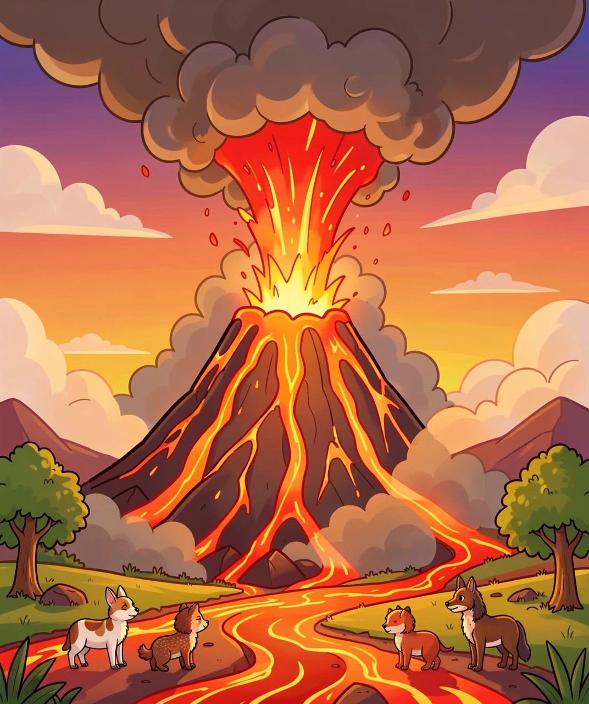
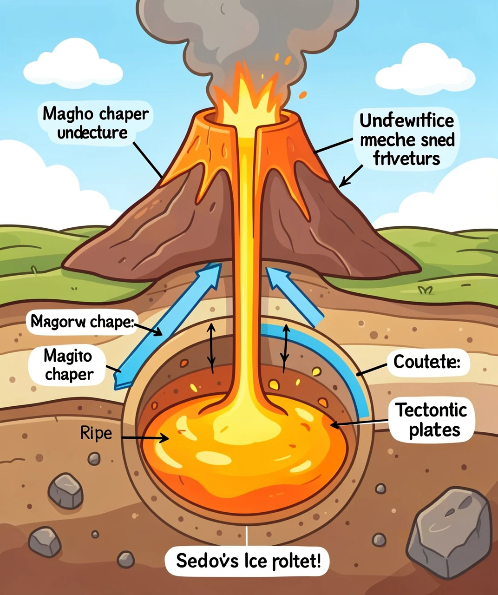
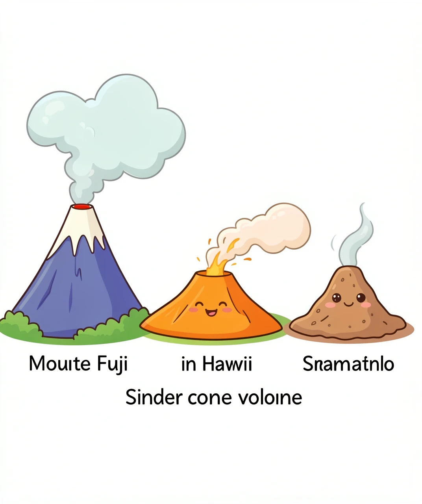
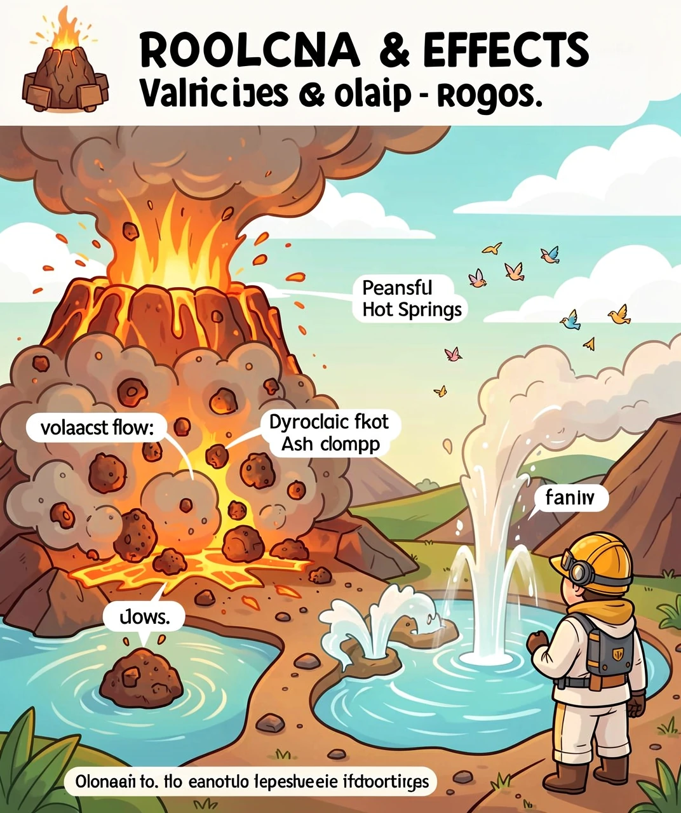
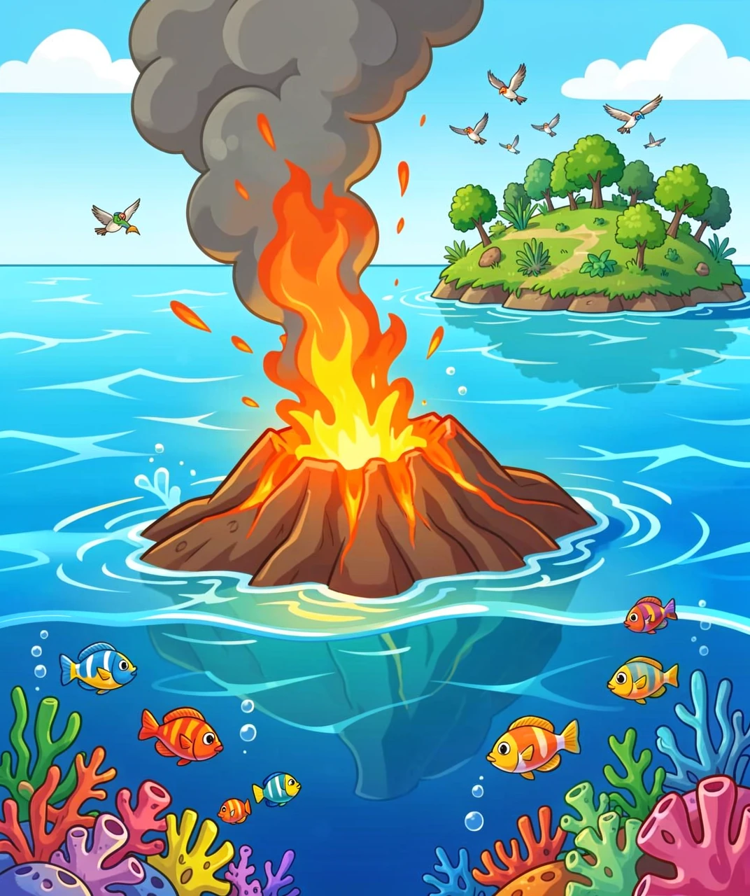

从地下岩浆到天空中的灰云——地球最壮观的力量
要理解火山，我们得先钻到地球肚子里去看看！地球就像一个巨大的煮鸡蛋：最外面是薄薄的地壳（蛋壳），中间是厚厚的地幔（蛋白），最里面是炽热的地核（蛋黄）。
地壳不是完整的一块，而是像拼图一样碎成了很多大块，科学家叫它们板块。地球表面有7大板块和几个小板块，它们漂浮在软软的地幔上，每年移动几厘米——差不多和你指甲生长的速度一样！

🌋 火山喷发——地球内部力量的壮观释放！
当板块互相碰撞、分离或擦肩而过时，地壳就会出现裂缝。地球内部温度高达5000°C以上，岩石被烤成了半流质的岩浆（magma）。岩浆比周围的固体岩石轻，就像水里的气泡一样不断往上挤。一旦找到裂缝，它就会猛烈地冲出地表——这就是火山喷发！
岩浆冲出地面后，我们就改叫它熔岩（lava）了。在地下叫岩浆，在地上叫熔岩，这是科学家的"行规"。
地壳表面温度：约15°C（你脚下踩的地面）
地壳底部（地下30-50公里）：约1000°C
地幔（地下2900公里）：约3000°C
地核中心（地下6371公里）：约6000°C——跟太阳表面一样热！
如果把地球比作一个100°C的热鸡蛋，地壳就像蛋壳外面那层不到1毫米的薄膜！
火山其实有自己的"身体结构"，让我们像解剖学家一样把它拆开来看看：

🔬 火山的身体构造——地下藏着一个岩浆的大房间！
🌋 火山口（Crater）——火山顶上的大碗状凹陷，岩浆就是从这里喷出来的。有些火山口很大，下雨后能积水成湖，叫火山口湖。中国长白山天池就是一个火山口湖，水深373米，是中国最深的湖！
🛤️ 火山通道（Conduit）——连接岩浆房和火山口的"管道"，岩浆通过这条通道上升。就像吸管里的饮料，岩浆被压力从地下"吸"上来。
🏠 岩浆房（Magma Chamber）——地下几公里到几十公里处的巨大空间，储存着大量岩浆。这里就像火山的"蓄水池"，岩浆在这里积蓄压力，直到忍无可忍——砰！喷发！
⛰️ 火山锥（Volcanic Cone）——火山喷发时，熔岩和火山灰一层层堆积，形成了像锥子一样的山体。越喷越高，有些火山锥能长到几千米！
不是所有火山都长得一样！根据形状和喷发方式，火山主要分为三大类型：

🏔️🛡️🗼 三种火山——高瘦的、矮胖的、小巧的
| 特征 | 🏔️ 层状火山 | 🛡️ 盾状火山 | 🗼 火山渣锥 |
|---|---|---|---|
| 形状 | 高而陡 | 矮而宽 | 小锥形 |
| 高度 | 可达数千米 | 可达数千米（但坡缓） | 通常<300米 |
| 熔岩 | 黏稠，流动慢 | 稀薄，流动快 | 较少 |
| 喷发 | 💥 猛烈爆炸 | 🌿 温和溢流 | 中等 |
| 代表 | 富士山、皮纳图博 | 莫纳罗亚、基拉韦厄 | 帕里库廷 |
火山喷发可不是只喷点岩浆那么简单。一次大型喷发会释放出好几种致命"武器"：

💨🔥 火山喷发的各种"武器"——远不止岩浆！
🔥 熔岩流——从火山口流出的滚烫熔岩，温度700-1200°C，像一条燃烧的河流缓缓前进。它速度不快（每小时几米到几十公里），但所到之处一切化为灰烬。好在你可以跑得比它快——除非你站在它的必经之路上！
💨 火山碎屑流——这是最致命的！高温气体、灰烬和岩石碎块以每小时700公里的速度冲下山坡，温度超过700°C。比高铁还快，比烤箱还热！1902年培雷火山喷发，碎屑流在3分钟内摧毁了28公里外的圣皮埃尔城，全城3万人只有2人幸存。
🌫️ 火山灰——喷到高空中的细小玻璃碎片和岩石粉末，能飘到几百公里外。火山灰不是"灰"——它是微小的锐利玻璃颗粒！吸入会损伤肺部，落在屋顶能让房子塌掉，进入飞机引擎能让飞机坠毁。2010年冰岛艾雅法拉火山喷发，火山灰导致欧洲航空停飞数周，影响了1000万旅客！
🌋 火山弹——喷到空中的大块熔岩，有些比汽车还大！它们在空中飞行时表面冷却变硬，落地时还是滚烫的。见过天上掉"火球"吗？这就是。
🌊 火山海啸——海底火山喷发或火山体崩塌入海，会引发巨大海啸。1883年印尼喀拉喀托火山喷发引发40米高海啸，3.6万人遇难，爆炸声在4800公里外的澳大利亚都能听到——这是人类历史上最大的声音！
说了这么多可怕的，但火山其实也是地球的"大功臣"！没有火山，我们生活的地球会完全不一样：

🏝️ 海底火山——创造新土地的巨人
🏝️ 创造新土地——夏威夷群岛、冰岛、加拉帕戈斯群岛……这些美丽的地方全都是火山"造"出来的！海底火山不断喷发，熔岩堆积，最终露出海面变成岛屿。夏威夷的大岛现在还在"长大"——基拉韦厄火山几乎天天在喷发，土地每年都在增加！
🌱 造出肥沃土壤——火山灰富含矿物质和营养元素，风化后变成超级肥沃的土壤。意大利维苏威火山脚下，农民种出了全世界最好吃的番茄和葡萄！爪哇岛只占印尼面积的7%，却养活了全国60%的人口——全靠火山土的肥力。
♨️ 地热能源——火山地下储存着巨大的热能，可以用来发电、供暖。冰岛90%的家庭用地热取暖，首都雷克雅未克是世界上供暖最清洁的城市。地热是真正的可再生能源，太阳不会灭，地球也不会凉！
💎 宝石和矿产——很多珍贵矿产都是火山的"礼物"。钻石来自地下150公里深的火山管道，金、银、铜矿很多都和火山活动有关。连你手机里用的铜线，可能都来自古代火山活动形成的矿床！
🌍 大气的来源——科学家认为，40多亿年前地球早期的大量和气体喷发，释放出的水蒸气、二氧化碳和氮气，形成了地球最初的大气层和海洋！没有火山，就没有空气，没有海洋，也就没有生命！
中国也有不少火山！最著名的：
🏔️ 长白山——中国最大的休眠火山，天池是火山口湖，最后一次大喷发约1000年前
🌋 五大连池——黑龙江，14座火山渣锥，保存完好的火山地貌博物馆
🏝️ 涠洲岛——广西，中国最年轻的火山岛，海水+火山岩=绝美风景
🔥 腾冲——云南，有著名的热海温泉群，地下岩浆活动仍在持续
火山就像地球的"压力锅"——内部热量不断积累，必须找个出口释放。它既是大自然的毁灭者，也是创造者。没有火山，就没有我们脚下的大地、呼吸的空气、吃的粮食。火山提醒我们：我们生活的这颗星球，其实是一颗活的、呼吸着的、充满力量的星球。🌋✨
💡 答案：1-B 2-B 3-C 4-B 5-C